My Projects
QA Inspection Data Utility - Web App
An internal web app developed to assist the quality assurance team at the company Crayola. Designed to allow efficient, intuitive record keeping of defects found in their manufacturing facilities, it provides both table editing capabilities as well as report generation. Records have a one to many relationship to defects, providing easier organization. Each defect can have multiple image attachments for visual representation of the defects recorded. All dropdown values in the record editor can be updated and maintained by the adminstrator without causing any harm to historical records utilizing old values.
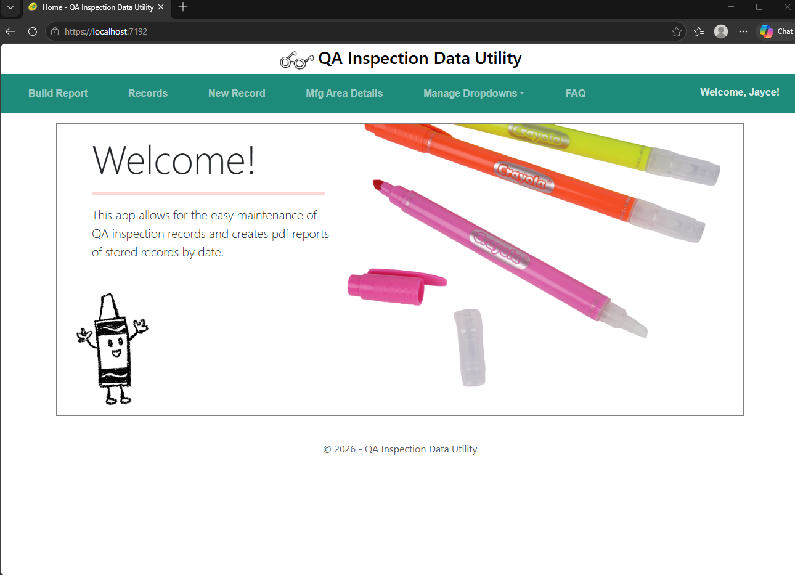

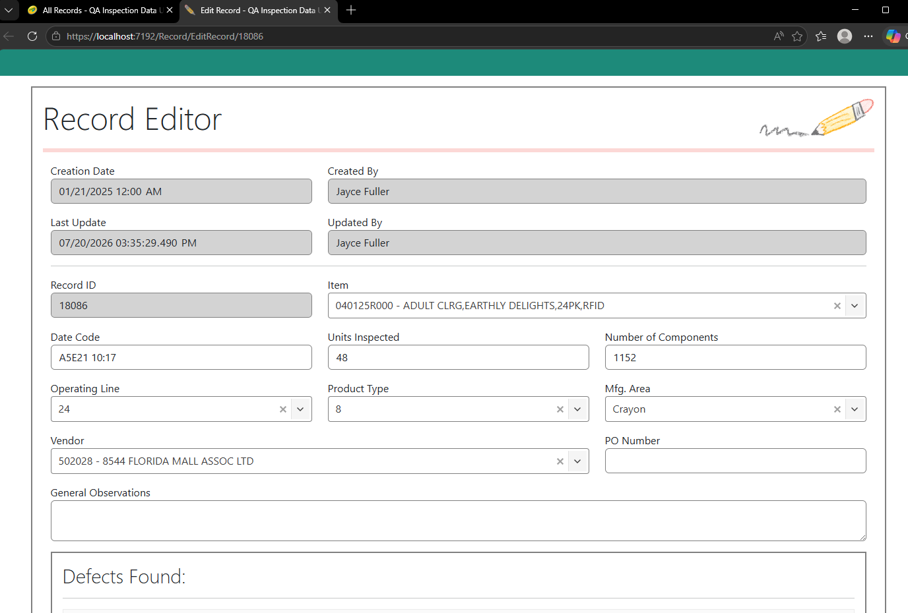
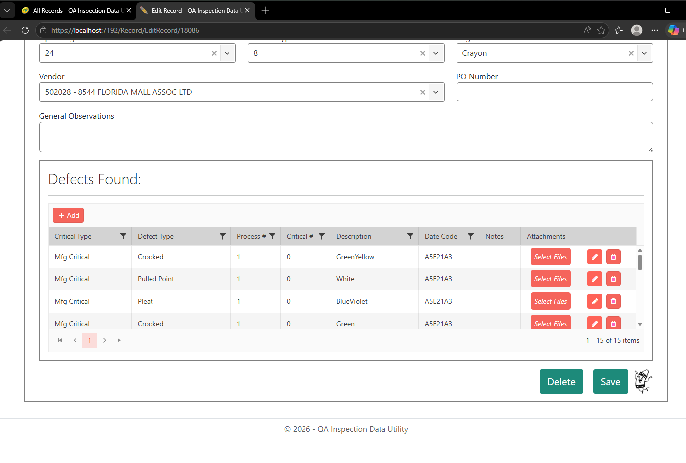

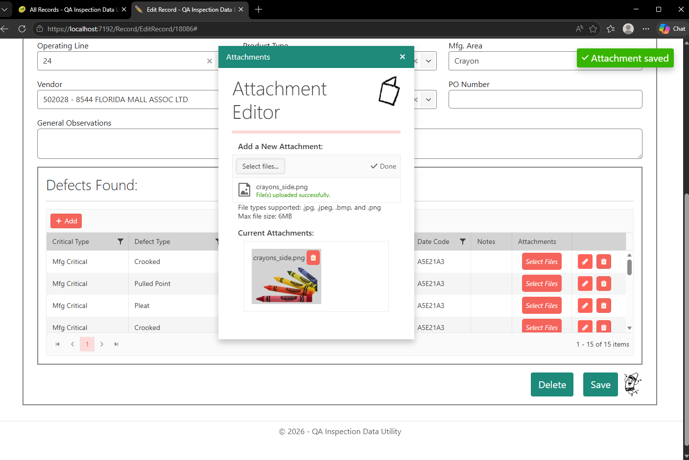
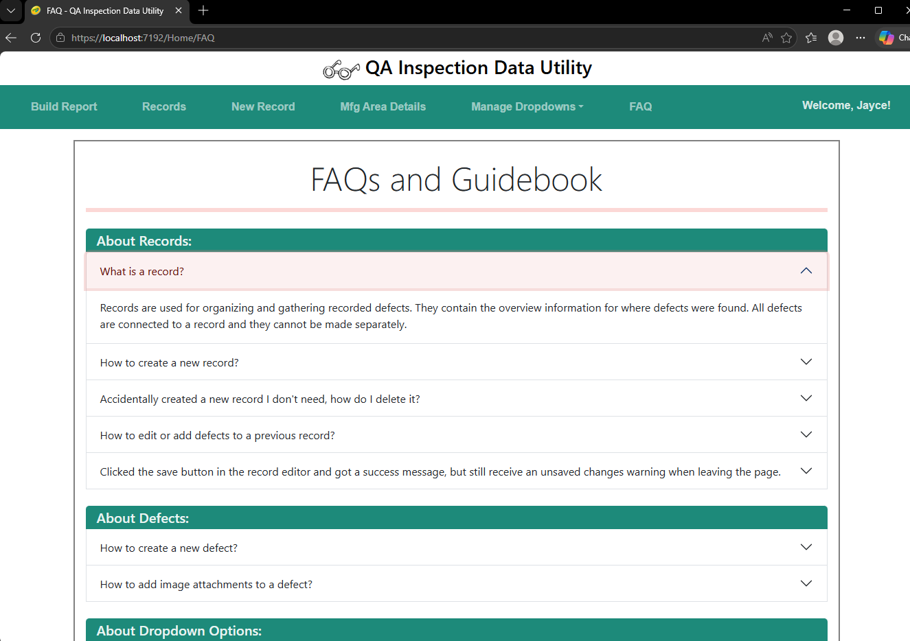
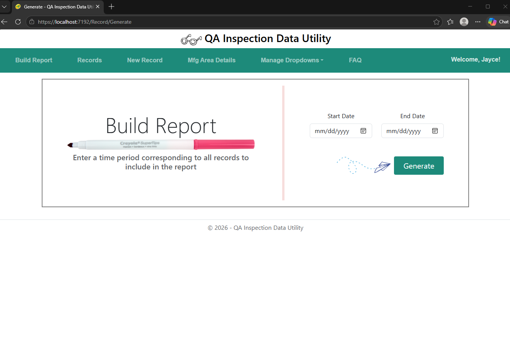
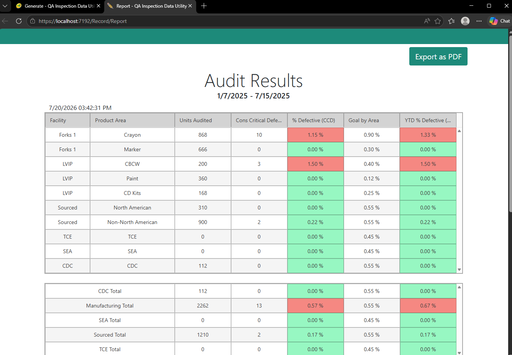
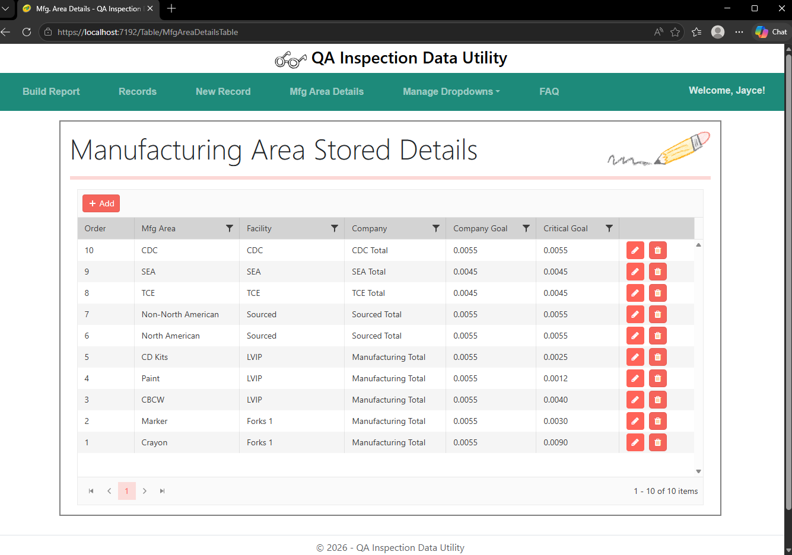

Personal Task Manager - Desktop App
Designed to allow users to keep their task management local to their computer without sacrificing features found in calendar and task apps by larger corporations. Both tasks and events can be stored in this app, and on initial load the user will see their to-do list for the day. Tasks can be completed with a simple check and are organized into lists. Overdue tasks will carry on to the next day with a warning label attached. Features such as task and event recurrence are planned to be added in the future, as well as full visual customizability to fit the user's aesthetic and visual preferences.
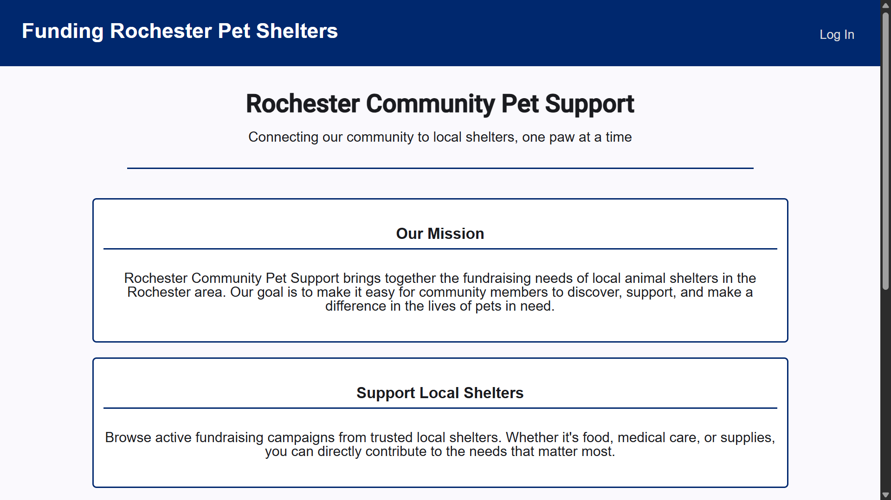
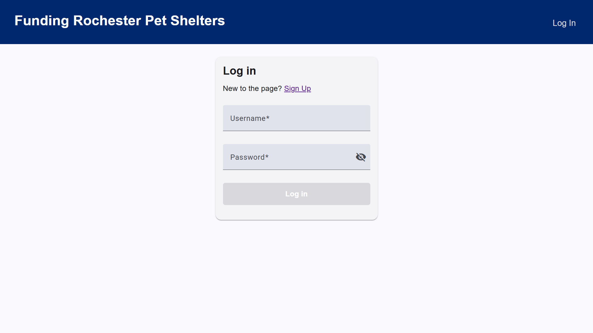


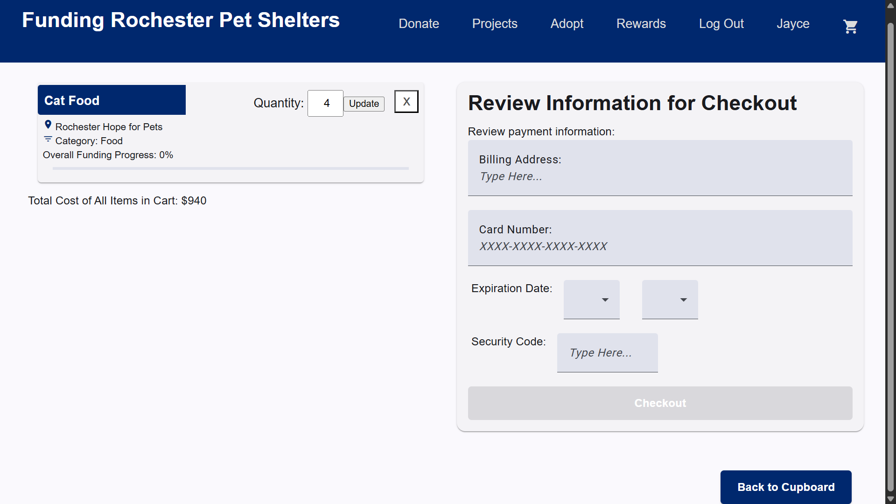


Non-Profit Support Site - Web App
An academic project developed alongside a team of my peers at RIT. Designed to hypothetically assist local Rochester
pet shelters receive funding for their pets, it provides a cupboard of needs, such as pet food and toys, to the users offering their help.
Needs can be added to the helper's cart for checkout, funding the progress bar for the need items purchased. Record is kept
of the helper's purchases, allowing them to earn sticker rewards for higher motivation to contribute again. An adoption page also allows
shelters to post pets up for adoption, through which helper's can send in an adoption form with their information to review. The site
has a unique manager login for site maintenance.
Ideas for further improvement were also drafted by our team. One such idea was to add logins for each shelter to manage their own
specific needs and pets. Here, shelter owners would also be able to see adoption requests, making the process much more convenient on this site.